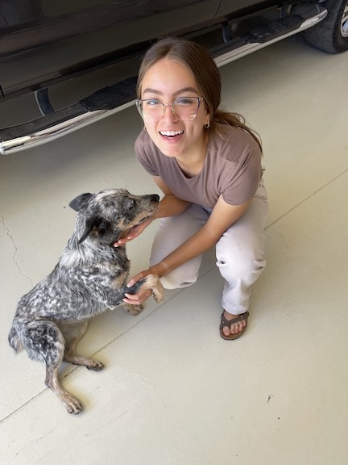

Lisa Yin
My name is Lisa, and I am a sophmore at Brigham Young University - Idaho studying computer science.
I enjoy going on hikes and watching movies, and I have been a member of the Church of Jesus Christ of Latter-day Saints
all my life. I think learning how to create a website can be very beneficial especially for people who own businesses.
I hope that at the end of this course I will be able to create a clean and functioning website and use this knowledge
to create a website for my family's business.